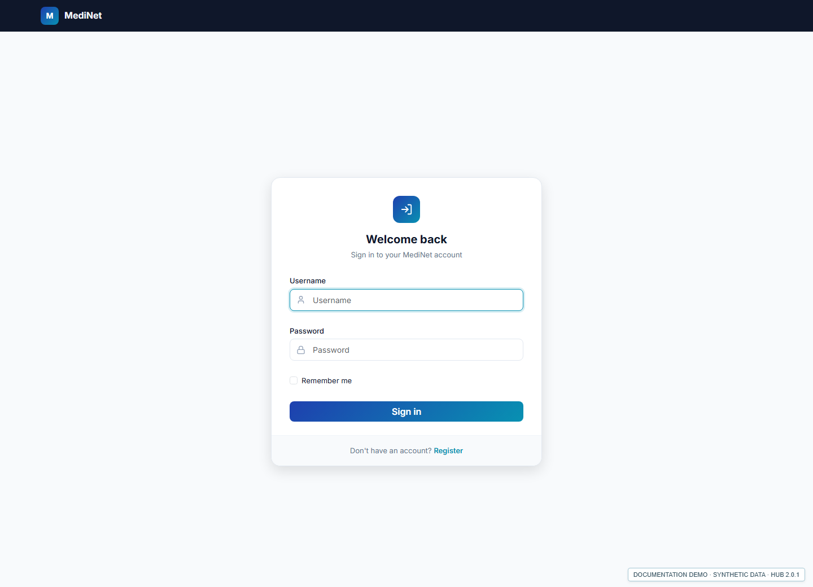
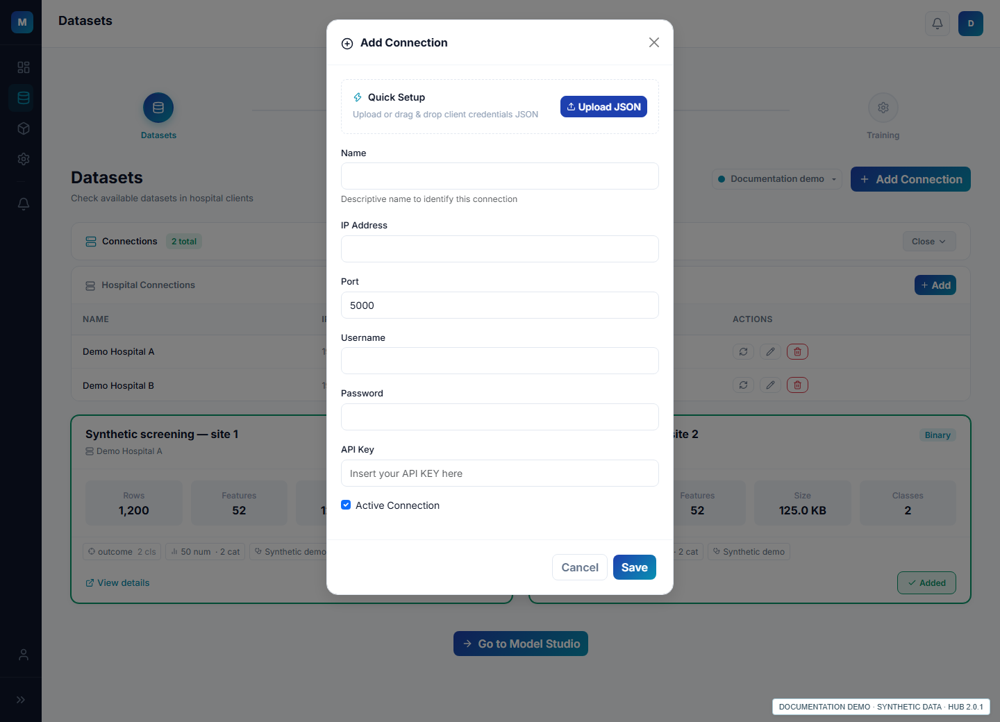
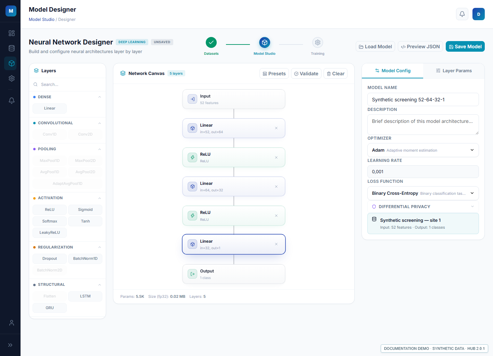
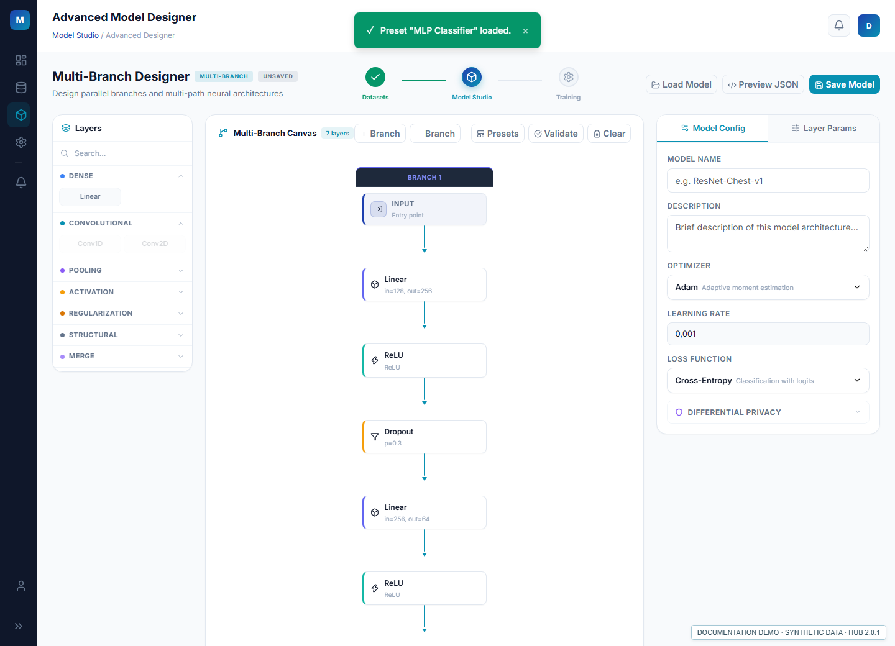
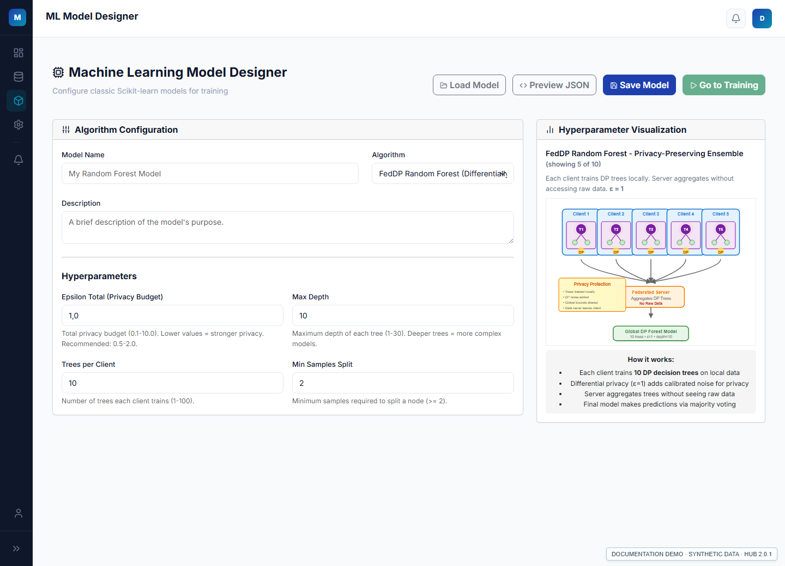
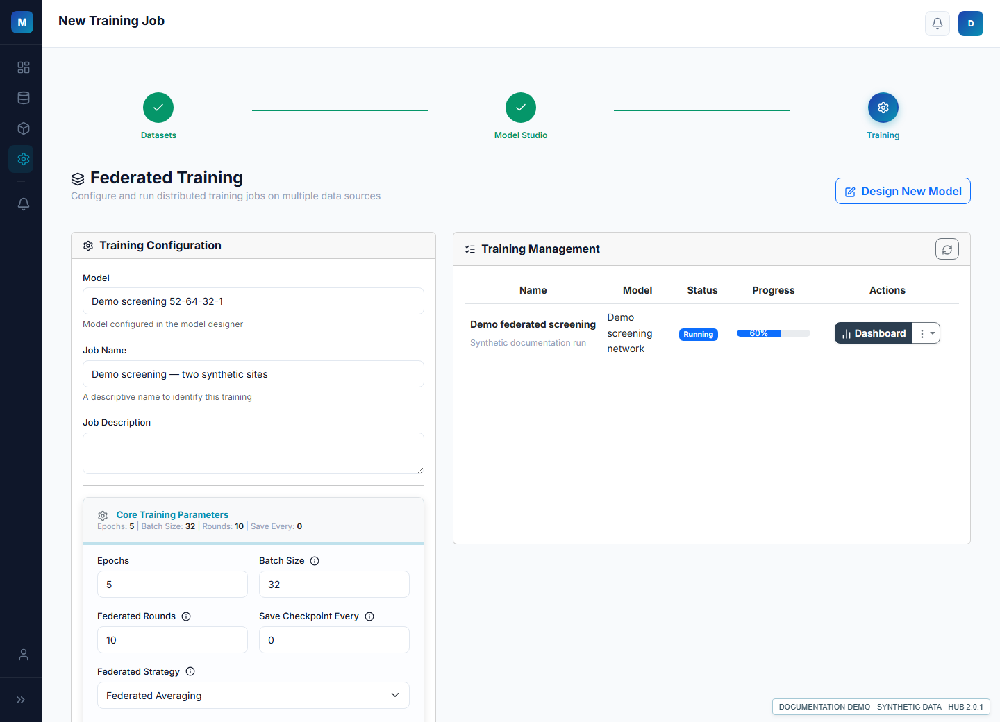
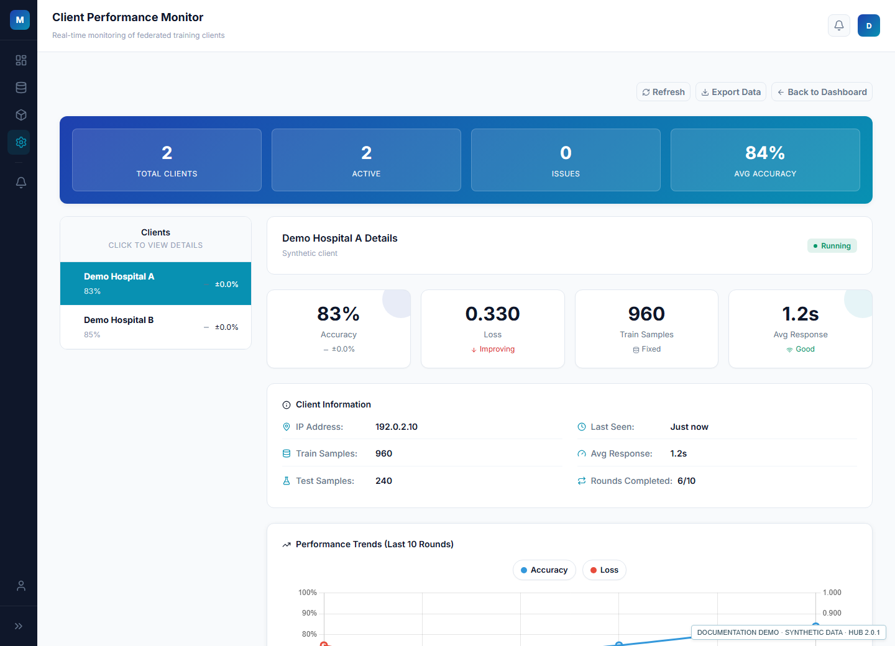

Choose your role
This guide follows the MediNetHub 2.0.1 screens. Researchers configure models and jobs in the Hub; hospital administrators manage data, accounts and privacy policy in the Node. The 1.0 guide remains available for older installations.
All screenshots use the original 2.0.1 templates and synthetic demonstration data. They illustrate the interface; the displayed metrics are not study results.
1. Sign in to the Hub
- Open the Hub address supplied by your administrator. The documented local Compose setup uses
http://localhost:5000. - Register if accounts can be created on your installation, then sign in with your Hub username and password.
- Obtain a Node researcher account, API key and dataset grants from each participating institution. A Hub account does not grant access to hospital datasets.
Keep institution credentials in the connection form. Do not include API keys in model exports, screenshots or paper supplements.

2. Find your way around the new dashboard
The left sidebar replaces the navigation shown in the 1.0 guide. Use Dashboard for the overview, Datasets for Node connections, Model Studio for saved configurations and Federated Training for jobs. The top bar contains the current project, notifications and your profile.
Before connecting a Node, the dashboard shows first-use actions and later stages may appear locked. Add a connection, synchronize datasets, design a model, then start training. With existing work, the dashboard summarizes models, jobs and recent activity.

3. Organize projects
Use project controls on the Datasets page to create a named project and assign connections to it. Select the project context before synchronizing or selecting datasets. Give projects and connections descriptive names so that multiple institutions can be distinguished in cards and client dashboards.
A Hub project organizes your connections; it does not replace the Node’s dataset grants or make another user’s completed jobs accessible.
4. Add a hospital connection
- Open Datasets, expand Manage in the Connections bar and choose Add Connection.
- Use Upload JSON in Quick Setup to load the credential file issued by the Node, or fill in Name, IP Address, Port and API Key manually. Review imported fields before saving.
- Use an address reachable from the Hub service. The browser’s
localhostand a container’slocalhostcan refer to different machines. - Keep Active Connection enabled, save, and use the connection test/synchronization controls.
- Repeat for each institution, then verify the returned datasets.
The Node can reject expired keys, requests from an unapproved IP or missing dataset permissions. In the 2.0.1 Datasets page, the connection-expiry refresh calls an out-of-scope getCookie helper; do not treat a missing expiry badge as proof that a key is valid. JSON credentials are sensitive and should be handled like the API key they contain.

5. Select compatible tabular datasets
- Synchronize each active connection to refresh its permitted datasets.
- Inspect the dataset card and details: institution, rows, columns, target label and available privacy-policy metadata.
- Select datasets for the model. Match the feature order, encoding, target interpretation and input dimensions across centers before training.
- Confirm the selection when continuing to Model Studio or the designer.
The Hub uses dataset metadata; training data stays on the Node. This snapshot does not establish automatic cross-center harmonization. A convolution or recurrent layer in a picker does not establish an end-to-end imaging or sequence-data pipeline.

6. Browse and compare models
Open Model Studio. In Browse Models, search saved models and filter by type. Select New Model and choose Sequential Model, Advanced Model (Residual Connections), or Machine Learning Model.
Compare Models accepts up to two completed training jobs from your account and displays their available metrics/configuration. Missing recorded values remain missing; a comparison screen does not substitute for a study evaluation.
The Import button in Model Studio is a placeholder in 2.0.1. Use the designer’s Load Model to reopen saved configurations and Preview JSON to inspect them.

7. Build a sequential neural network
- Choose Sequential Model. The Neural Network Designer shows the layer picker on the left, the architecture in the center and configuration controls on the right.
- Set the model name and description. Add layers from the picker, reorder them as needed, and configure each layer’s dimensions.
- For a binary tabular classifier, a typical architecture is Linear(input width, 64) → ReLU → Linear(64, 32) → ReLU → Linear(32, 1). Set the input width from the actual selected feature matrix.
- Choose an optimizer, learning rate and loss. The 2.0.1 UI calls the binary option Binary Cross Entropy; the companion Node maps its
bcevalue to BCEWithLogitsLoss. The last prediction layer should emit logits; do not append a Sigmoid for this loss. - Review Differential Privacy settings and dataset policy. A configured noise multiplier and clipping bound have consequences for both privacy and utility.
- Use Preview JSON to inspect the saved fields, then Save Model. After saving, Continue to Training becomes available.
The illustrated 52-input model reproduces the paper-linked configuration. Confirm preprocessing and exclude identifiers for a new study rather than blindly copying that width.

8. Use the advanced editor with the 2.0.1 limits
The Multi-Branch Designer presents branches side by side, with layer controls, fork positions and merge selections. Choose the intended branches and compatible tensor dimensions when adding a residual Add or Concat merge.
This edition preserves the editor as it exists in 2.0.1. The original save/export and runtime paths do not establish full branch fidelity: later graph-validation, load/save and recurrent interoperability corrections from 2.1 are excluded. Inspect the saved JSON and validate a forward pass and the matching Node before relying on an advanced model. Use a sequential architecture for the documented paper workflow.

9. Configure machine learning
Choose Machine Learning Model. The Algorithm menu offers FedSVM (Federated SVM OptMD) and FedDP Random Forest; the form changes with the selection.
- FedSVM: kernel, gamma, polynomial degree when applicable, convergence thresholds and random Fourier feature settings.
- FedDP Random Forest: ensemble size, depth and privacy epsilon settings shown by the form.
Save the configuration before continuing. These algorithms have strategy code, but the Hub labels, model JSON and Node implementation must be matched: the companion Node’s SVM uses an RFF/DP-SGD path, and the old “OptMD” label is not a current algorithm contract. The SVM convergence epsilon is distinct from a Differential Privacy epsilon.
Do not assume every algorithm mentioned in old plans, hidden form code or comparison labels is selectable or supported.

10. Configure a federated job
- Continue from a saved model and confirm its name and selected datasets.
- Give the job a unique name and description.
- Expand Core Training Parameters. Local epochs are passes over each center’s data; rounds are federated exchanges. Batch size applies to deep learning.
- Set checkpoint frequency: zero requests the final model only; a positive value requests periodic saves.
- Review metrics, participating clients, sampling fractions and minimum client counts. Minimum counts must be compatible with the available centers.
- Review the privacy estimate and each Node’s policy before starting. The estimate is not a final privacy expenditure.
- Start the job, then open its dashboard. A returned job ID is not proof that every center joined or completed training.
Snapshot limits: the form exposes FedProx and Flower-version options, but the inspected DL server dispatcher selects FedAvg and the installed requirements pin Flower 1.19.0. Use the verified runtime rather than treating those choices as implemented switches.
A production dataset may reject a job that exceeds its per-job or lifetime budget. Use the budget reset request flow if available; the administrator decides whether to approve it.

11. Follow global and client metrics
The job dashboard reports state, round progress, loss and available metrics. Distinguish Pending, Server Ready, Running, Completed, Failed and Cancelled. A connection appearing active on the dataset page does not establish an active Flower participant.
Open the client dashboard for center-level participation and available metrics. In 2.0.1, response-time/trend fields and some performance-history endpoints contain placeholder or randomly generated values; those displays must not be treated as measured results. Inspect failed clients and logs before interpreting aggregated curves. Final model and metrics download controls depend on files generated by the job; do not infer ONNX or TorchScript support from a planned format list.
Use Model Studio’s completed-job comparison to assess separate runs. Automatic grid search and experiment pages populated with prototype data are outside this documented workflow.


12. Hospital Node: administrator and researcher workflow
The Node companion snapshot is documented separately from the Hub version label; see pinned sources and Installation.
Initial setup and roles
Open the Node after installation and complete /setup/ to create the first administrator and center identity. Node ADMIN manages users, dataset permissions and privacy policy. AUDITOR reviews authorized audit information. RESEARCHER accesses authorized datasets through the Hub/API; MEMBER has a separate inference scope in this companion snapshot. Do not reuse a researcher key for administration.
Issue and maintain access
- Create the intended user role, issue an API key and configure allowed IPs and expiration.
- Grant access only to the required datasets and enable the intended operations.
- Export the connection credentials for the researcher to load in the Hub.
- Revoke or renew expired keys and remove dataset grants when a study ends.
Prepare datasets and policy
Upload/maintain supported tabular data locally and set its target label. Check types, missing values, encodings and feature order before granting federated training access. Review active/paused state and experimental versus production privacy policy. Configure per-job limits and the researcher budget according to the Node policy; “experimental” and “production” affect admission checks.
Review jobs, budgets and audit activity
Inspect training failures and access logs on the Node. Production budget handling includes admission reservations and reconciliation of reported expenditure at completion/failure. A Hub reset request is pending until reviewed by ADMIN; repeated Hub requests or restarts do not grant a fresh budget.
The controls are implementation mechanisms, not GDPR/HIPAA certification. See the 2.0.1 security review for transport, authentication, privacy accounting and deployment limits.
Common problems
- No datasets after adding a connection
- Check the project, active connection, synchronization result, API-key expiry/allowed IP and Node dataset grants.
- Dataset visible but training rejected
- Check target/feature compatibility, operation permissions, paused state, per-job limits and remaining privacy budget.
- Web interface works but clients cannot join
- Verify the Flower address is reachable from each Node, the published training port and TLS certificate addresses.
- Advanced model reopens differently
- Keep the original JSON and use a validated sequential model for this snapshot; 2.1 graph repairs are excluded.
- Metrics or download missing
- Inspect job state and logs, client participation and the artifacts actually saved. Demonstration screenshot values do not imply files are present in your installation.
Follow the paper-linked case study or return to installation and connection checks.